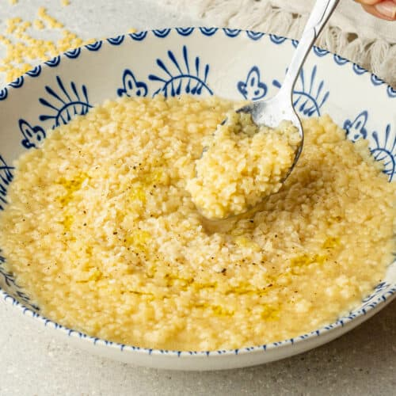

Pastina

Description
This recipe creates pastina cooked in chicken broth until it is absorbed.
This is a quick and easy recipe that only takes a few ingredients.
Ingredients
- Chicken broth
- Pastina
- Egg
- Parmesan cheese, grated
- Olive oil
- Black pepper
Steps
- Pour chicken broth into a pot over medium heat, then about half the amount of pastina. Let it boil until most broth is absorbed.
- Once most of the broth is absorbed, turn off the heat. Crack an egg and stir it into the pastina.
- Pour pastina into bowls, then top with grated parmesan, black pepper, and a drizzle of olive oil.
Home